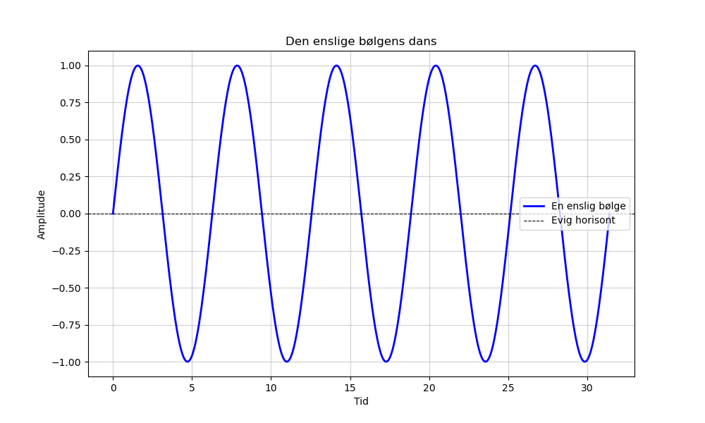

Dagens dikt
En enslig bølge i et hav av stillhet,
krysser tiden, venter på vilje.
Den stiger høyt, og synker lavt,
Svingninger i dans, aldri savt.
En sinuskurve mot en evig horisont,
Vinkler endres, men tanken er konstant.

Kode
import numpy as np
import matplotlib.pyplot as plt
# En matematisk representasjon av diktet: sinusbølgen som symboliserer bølgens oppgang og nedgang.
x = np.linspace(0, 10 * np.pi, 1000) # X-verdier for tiden som går
y = np.sin(x) # Sinusbølge for opp- og nedgang
curve_constant = np.pi # Evig horisont, vinkler endres (grunnverdien for sinus)
# Plotting
plt.figure(figsize=(10, 6))
plt.plot(x, y, label="En enslig bølge", color="blue", linewidth=2)
plt.axhline(0, color="black", linestyle="--", linewidth=0.8, label="Evig horisont")
plt.title("Den enslige bølgens dans")
plt.xlabel("Tid")
plt.ylabel("Amplitude")
plt.legend()
plt.grid(alpha=0.6)
plt.savefig('2025-03-20-20-02-17.png')